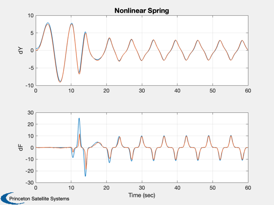
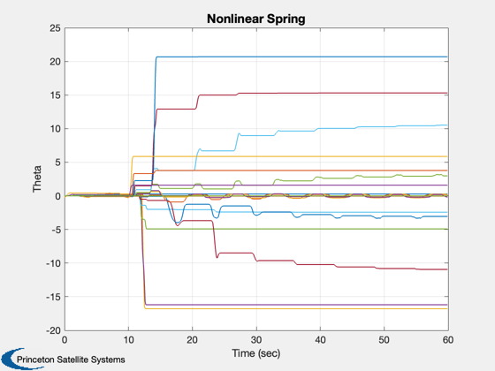

Test Fault Diagnosis using online approximators.
This script replicates the example in the referenced paper.
Since version 9. ---------------------------------------------------------------------- References: Demetriou, M. A. and M. M. Polycarpou. "Incipient Fault Diagnosis of Dynamical Systems Using Online Approximators." IEEE Trans. Automatic Control, Vol. 43, No. 11, Nov. 1998, pp. 1612-1616. ---------------------------------------------------------------------- See also Plot2D, RK4, NonlinearEstimator, NonlinearSpringFault, OnlineApproximator, delta ------------------------------------------------------------------------
Contents
%-------------------------------------------------------------------------- % Copyright (c) 2002 Princeton Satellite Systems, Inc. % All rights reserved. %-------------------------------------------------------------------------- clear d; clear dEst; dT = 0.1; tEnd = 60; nSim = tEnd/dT; yPlot = zeros(4,nSim); qPlot = zeros(19,nSim); t = (0:(nSim-1))*dT; y = [0.5;0.1];
Spring data
%------------
d.m = 1;
d.k0 = 0.5;
d.c0 = 0.5;
d.a = 1;
d.rho = 0.1;
d.tFail = 10;
d.f = 5;
d.omegaF = 1.0;
delta = d.k0*d.a^2;
Estimator states
%----------------- nP = 19; yEst = [0;0;zeros(nP,1)]; dEst.plant.k0 = d.k0; dEst.plant.c0 = d.c0; dEst.plant.m = d.m; dEst.est.k = 0.55; dEst.est.c = 5; dEst.oA.sigma = 0.5/sqrt(log(2)); dEst.oA.c = linspace(-9,9,nP)'; dEst.thetaMax = 100; c = dEst.est.c; k = dEst.est.k; dEst.gamma = 100*max([(sqrt(c^2 + 4*d.m*k) - c)/(2*k) d.m/c]); dEst.dT = dT; dEst.f = d.f; for k = 1:nSim yEst = NonlinearEstimator( yEst, y, t(k), dEst ); f = NonlinearSpringFault( y, t(k), d ); fOLA = -OnlineApproximator( y(1), yEst(3:end), dEst.oA ); yPlot(:,k) = [y(1);yEst(1);f;fOLA]; qPlot(:,k) = yEst(3:end); y = RK4('NonlinearSpring', y, dT, t(k), d ); end
We are plotting y, yDot and the fault which is the nonlinear
Plot2D( t, yPlot, 'Time (sec)',['dY';'dF'],'Nonlinear Spring','lin',{'[1 2]';'[3 4]'}) Plot2D( t, qPlot, 'Time (sec)','Theta','Nonlinear Spring') %-------------------------------------- % PSS internal file version information %-------------------------------------- % $Id: 8e5136ccf49aa9eaf06d68af3b954e78d3ac679f $ 